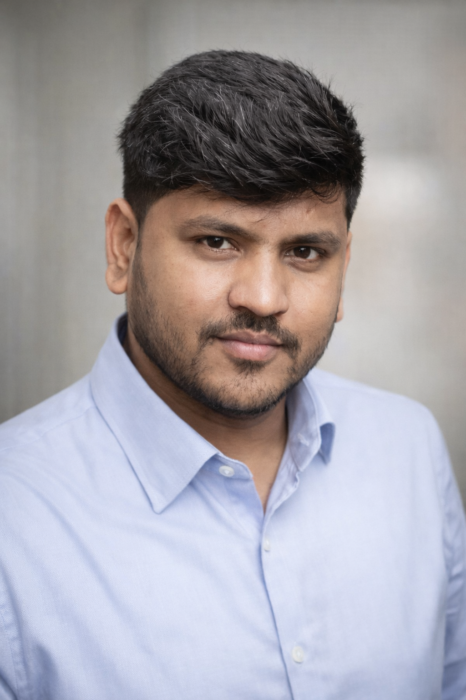

Mahmad Isaq Karankot
Ph.D. Candidate, Electrical & Computer Engineering
I'm a Ph.D. candidate in the BMW Lab at Montana State University, advised by Dr. Bradley Whitaker. I work on hyperspectral image classification, wildfire emission modeling, and surrogate ML models as part of the NSF SMART FIRES initiative, a multi-institution effort in wildfire science.
Before returning to research, I spent six-plus years as a senior software engineer at Accenture, Brillio, and Born Group, building production ML systems and e-commerce platforms used by tens of thousands of people. I still write code the way an engineer does — for something that has to actually run.
I hold an M.S. in ECE from MSU (thesis on ICU length-of-stay prediction) and I'm generally interested in where machine learning meets messy, high-stakes, real-world data — wildfire is my current domain, not my only one.
Updates
News
- 2025 Attention and Edge-Aware Band Selection for Efficient Hyperspectral Classification of Burned Vegetation, with Dr. Bradley Whitaker, presented at IEEE MLSP 2025.
- 2025 Two papers on hyperspectral band selection and dimensionality reduction accepted at SPIE Future Sensing Technologies 2025.
- 2024 Received the Best Computing Paper Award at IEEE i-ETC for work on predicting ICU length of stay from incomplete medical data.
- 2024 Began serving as a reviewer for IEEE i-ETC, evaluating submissions in AI/ML and smart systems.
- 2024 & 2025 Awarded the William V. Benjamin Scholarship, MSU College of Engineering.
- 2023 Started the Ph.D. in Electrical & Computer Engineering at Montana State University, joining the NSF SMART FIRES initiative.
Research
Selected Publications
-
IEEE MLSP 2025
Attention and Edge-Aware Band Selection for Efficient Hyperspectral Classification of Burned Vegetation
Read paper → -
SPIE Future Sensing Technologies 2025
Hyperspectral Band Selection via Self-supervised and Reinforcement Learning for Prescribed Burn Impact Analysis
Read paper → -
SPIE Future Sensing Technologies 2025
Virtual Band Construction for Dimensionality Reduction in Hyperspectral Image Classification
Read paper → -
IEEE i-ETC 2024 🏆 Best Paper Award
Addressing the Challenge of Missing Medical Data in Healthcare Analytics: ML Predictions for ICU Length of Stay
Read paper →
Career
Experience
Montana State University — SMART FIRES (NSF OIA-2242802)
Developing ML models to classify fuel types and predict burn intensity from hyperspectral data. Designed two novel feature selection algorithms and apply surrogate modeling for regional-scale emission estimation.
Brillio — SAP CX
Led a site-wide search overhaul replacing Solr with Unbxd, implemented an AI/ML product recommendation engine, automated manual workflows, and upgraded the Hybris platform from 1905 to 2105.
Accenture
Built a scalable B2C e-commerce platform for Cardinal Health. Integrated Samsung Pay, Klarna, and regional payment systems across Dubai, Vietnam, and Thailand. Led 150+ RESTful API endpoints and mentored junior developers.
Born Group · Usha Martin · Bob-eProcure
Developed B2B e-commerce features, CI/CD pipelines, fraud detection modules, and data feed processors for GlaxoSmithKline, Makino USA, and Exim Bank of India.
Toolkit
Skills
ML & AI
- PyTorch & TensorFlow
- Scikit-learn
- OpenCV & computer vision
- Hyperspectral analysis
- NLP / LLMs
- Surrogate modeling
Programming
- Python (NumPy, Pandas, SciPy)
- Java & Spring
- MATLAB & Julia
- JavaScript
- Groovy & JSP
- SQL (MySQL, PostgreSQL)
Engineering
- AWS & Azure
- SAP Commerce (Hybris)
- RESTful APIs & microservices
- CI/CD (Jenkins, GitHub)
- Docker & DevOps
- Agile / Scrum
Get in touch
Open to research collaborations, internships, and problems worth solving properly.